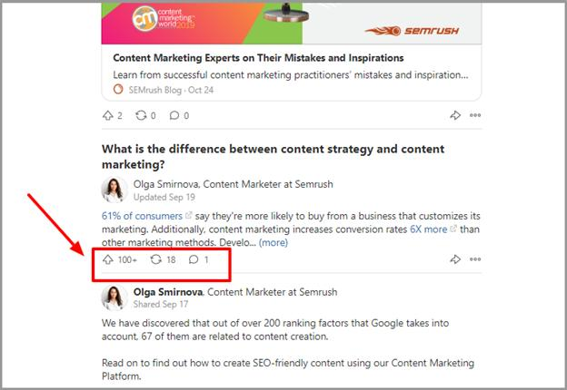

A solid Quora marketing strategy can propel your business forward.
With over three hundred million monthly users, it’s one of the largest social media platforms in the world and is unique in many ways.
People visit Quora to consume in-depth content – they’re not interested in the 280 character blurb, or the clickbait headline.

This presents an opportunity and a challenge.
How do you effectively use Quora to grow your reach, influence, and revenue?
This article lays out the most important aspects of marketing on Quora so you can quickly get to 1 million views and beyond.
Things to know about Quora before you get started
It’s tempting to jump in, start answering questions, and linking to your website. That’ll get you banned or suspended from Quora within a few days.
The platform has active moderators that will collapse your answers at the slightest provocation. The spam policy (which you can find here) is vague and open to interpretation.
It says many things but I’ve copied the relevant part below:
On Quora, spam is defined as one or more questions, answers, posts, comments, or messages whose purpose appears to be to direct traffic to external commercial sites while providing little to no value back to the Quora Community.
If a moderator believes you’re sending traffic away from Quora and aren’t delivering quality to the community then your answers will be collapsed. If you continue to do it then your account may be suspended or banned.
It’s OK to link to your company website or blog but it should be done in a way that delivers value to the readers. As long as you keep this in mind, Quora will become an essential part of your marketing plan and yield dividends for a long time to come.
Start with your Quora profile
Quora readers pay attention to the person answering a question. If you’re a bank teller then they’ll give your answers about the banking system weight. They won’t spend much time on your answers about starting a business.
There are two places where you let people know how you’re qualified to answer specific questions.
Your Profile page
The Quora profile page is unique among social platforms. You’re not limited to a short blurb. It gives you as much space as you need to share your message.
Start by writing your byline. It’s a short description of you and your qualifications. By default, it will show next to every question you answer so make sure it’s a good one. The byline is now limited to 60 characters.
The rest of your Quora profile doesn’t have such strict character limits. This is where you truly showcase who you are and why people should follow you. It also supports links to almost anywhere on the internet (you cannot put affiliate links).
Later in this article, I’ll show you how to direct a lot of traffic back here to increase your followers so this aspect is essential. Don’t rush into it.
Here are a few things to keep in mind when you’re making it:
- Add a large relevant image or video – Your profile picture is hard to notice but you can add a much better image or even a video within your description. It can be anything but try to use a graphic that represents your brand or a product you’re promoting.
- More about you as a person or brand – This is your opportunity to give more details about yourself to millions of Quora readers. If you’re the CEO of XYZ company, say a bit more about it and your mission. Let them know why you’re on Quora. Mention what they can expect from following and interacting with you.
- Links to other digital properties – You’re not on Quora for fun and games alone. Adding links to the right places is essential to make your Quora marketing strategy work. Add at least one link to a Quora specific landing page that gives away something valuable in exchange for an email so you can use email marketing to turn them into customers.
Also link to products, service pages, other social profiles, and more. Another method people have used to excel on Quora is treating this area as a knowledge base for answers they like or have gotten a lot of traction in the past. After you’ve added links to every other place, add in links to your favorite answers or answers that shed light on your brand.
Another section of your Quora profile should be optimized. This may not improve your conversions but it does make it easier for you to get discovered. On your profile page, look for an area called “knows about” to the right of the screen.
It lists all the topics you have expertise in and you can add or remove topics. Click the pencil icon to add more topics. This increases your visibility and makes it easier for people to find you when looking for experts to invite to answer questions.
When answering individual questions
People have a diverse set of interests and experiences. Quora understands this and allows you to create a relevant byline for individual topics.
This comes in handy because you may have optimized your profile as the host of a podcast about creativity but find yourself answering a question about pets. A byline that says “host of the creativity show” would be out of place.
When you’re answering questions, there’s an option right below your default byline or work experience that says “edit credential.”
Click it to open a screen and add specific credentials for the topics associated with the question. This is a great way to show specific expertise as the need arises.
All of this is the preliminary work and it takes a bit of time to set up but when done right, you’ll get more out of Quora. Now, you can focus on finding the right topics and questions.
Find the right topics & questions
The topics and questions you focus on are among important things when trying to amass millions of views. If you spend your energy in the wrong place, you’ll answer hundreds of questions with little to show for it. First you have to find the right topics.
Finding topics
Topics should be closely tied to your brand but have a large enough following to help you get views. This is essential because when you’re just starting out, you won’t have enough followers to generate traffic to your answers.
There are three ways to do this:
- Search Quora
Use the search bar in the top right corner and type in one of your relevant keywords. Go broad at this point so you don’t accidentally miss promising topics.
A drop down will appear that shows some of the top matches but ignore those. Click search and it’ll bring back questions related to fitness.
Look to the left of the screen and click on the menu option labeled “topics.” It’ll show you all of the topics related to fitness as well as the number of followers it has. Open all of the relevant ones in a new tab.
Repeat the process with other keywords until you feel you’ve found everything possible through the search function.
Now, it’s time to revisit those topic pages you opened.
- Use the topic recommendations
First, follow the topics so questions will show up in your feed. Each topic has a series of related topics on the right hand side of its landing page.
Many of these topics get missed when using the search function because they have strange names or may be just outside of your niche.
For example, if someone focused content marketing they’d follow the digital marketing and social media marketing topics but may miss user generated content. The related content ideas would help them find it and expend their reach.
- Follow top writers you find from topics
Top writers got that way for a reason. Yes, they may be good writers but more likely, they focused on the right topics and the right questions.
On the topic landing page, there’s an area that says “most viewed writers.”
Click on it and take note of how many views the top writers have, the topics they’re following, and the questions they’re answering.
Finding the perfect questions
Finding questions is a nuanced process because there’s no way to search for questions with the highest follower count or views. That’s why we focused on finding topics and top writers. They’ll lead you to the right questions.
Start with top writers. Go to their profile and look at the questions they’re answering. If it’s a question you’re interested in answering, check how many upvotes and views they got.

Open all the questions that look promising in a separate tab. Continue this process until you’ve gone through at least 50 of their answers. You can also sort it their feed by most viewed answers.
Look at each question individually and evaluate it based on the following criteria:
- Number of people following the question
The number of followers is a proxy for interest. In most cases, the more people following an individual question the better. Every follower will get an email notification when there’s a new answer.
Aim for questions with at least 50 followers. That’s just enough to get the ball rolling if they find your answer interesting.
The above example appears to be a good question but there’s another factor to take into consideration, the number of answers.
- Number of answers the question has
The more answers a question has, the less relevant it becomes for your Quora market strategy.
Why is that?
People get an email notification when there’s a new answer. Over time, they’ll exposed to many unique angles and will be less likely to engage with new answers. In essence, it’s message fatigue.
Even if a question has more than 50 followers, it’s important to look at the number of answers to that question. If there are too many, then it may be better to skip it. A good ratio to aim for is 7:1. Seven followers for every answer.
- Distribution of answer views
The final criteria is the total number of answer views and how they’re divided up between writers. For example, if a question has 100,000 views and one writer has 90,000 views, then they may have a large following or an interesting answer.
If a question has 100,000 views and each answer has 5,000 – 10,000 views then you can be fairly certain you’ll get a similar amount of views.
In the past, you could see total views to the right of the answer but that feature has been removed. Find total views by adding up individual answer views. If this is too much work, look at the top ten answers and see how many views they have combined and how those views are distributed.
Once you’ve vetted a question, add it to your answer later collection and continue the process until you have a healthy number of questions shortlisted. You can repeat this process with topics instead of top writers.
How to answer questions for maximum views
Nothing matters if you don’t create content people want to read. Mediocre answers don’t get traction.
When someone is scrolling through their feed, they only see a portion of your answer, 197 characters with spaces. It should be enticing enough for them to click and view the rest of the content. If it’s not, they’ll keep strolling.
There are 2 specific ways to accomplish this on Quora and they borrow from timeless copywriting principles.
Curiosity gap
A curiosity gap is the distance between what you know and what you want to know or need to know. Clickbait headlines have made this an art form. The fact is, humans don’t like loose ends which is evidenced by the Zeigarnik effect.
When you’re able to use a curiosity gap within the first few lines of your answer, people will keep reading to find the information you’ve made them curious about.
In the above example, I threw out a few big numbers about popular startups. It frames the answer like one that’s going to give them the secrets to building a billion dollar company. Right before the cutoff point, it starts telling the reader what they want to know and invites them to keep reading.
This answer used the curiosity gap even more. I asked a few loaded questions about the current state of affairs in the media. The place people turn to for information. Since it was in direct opposition to what people expected, they got curious. Over 500,000 people viewed the answer.
Use the curiosity gap by:
- Throwing out shocking statistics
- Focusing on a contrarian view
- Asking questions that you’ll answer a bit later
- Tell them what you’ll give them at a specific point in the answer (for example, I’m going to share 7 ways to get in shape. 5 is the most powerful).
Storytelling
People connect with stories on a deeper level than facts and figures. Researchers in Spain found that when we read fiction containing passages that involve our senses, the parts of the brain responsible for that sense was activated.
On Quora, tell stories about your experiences that relate to the question. Keep the following things in mind when writing your stories and writing in general:
- Use the rule of three
- Short paragraphs and sentences
- Get to the point quickly
Quora answers should be detailed, carry relevant imagery, and focus on delivering value to the reader. If you get those right then you’ll get views, upvotes, shares, and comments.
Other considerations
A quick hack to improve question visibility is to increase the number of topics associated with it. You can add up to 5 relevant topics to every question.
People who follow those topics may see your answers in their feed. When you’re answering the question, click the edit icon and add in more relevant topics.
Not every question has editable topics but take advantage of this whenever you can.
You can also update or create an answer wiki when there are multiple answers and it’s difficult for people to sort through them. This option isn’t available for every question but the more answers a question has, the greater the chance that it’ll have the option for an answer wiki.
To rapidly grow your followers, add two CTAs to the end of your answers. One will encourage people to follow you to Quora and the other directs people to a specific landing page on your website.
This is ideal because you’ve answered the question thoroughly so you’ll be safe from the overzealous moderators. If you notice any issues with this approach, remove the CTA that directs people to a third party website and instead, send them to your profile which has been optimized for conversions.
Quora is a combination of quality and quantity. In the beginning, it’ll be difficult to get a hundred thousand views on your answers. Make a commitment to answering multiple questions a day for the first few weeks at least. If you’re having trouble with it, use a productivity tool that’ll help you focus on the goal. Eventually, each answer will get more traction.
Leveraging Quora activity to get into industry publications
The final aspect an effective Quora marketing strategy is leveraging your activity into larger appearances in industry publications. Websites like Forbes, Fatherly, Inc. etc. regularly syndicate content from Quora. You’ll be able to increase brand awareness and get solid backlinks from the third part publisher (they leave most links intact).
It’s not easy to get the attention of the people in charge of publishing partnerships. One way to do it is find the people who’re in charge of partner relations and answer the questions they ask.
You can see that Alecia is in charge of partnering with publishers and has asked almost three thousand questions. Her questions tend to be asked in a way that helps publishers find the right answers. She’s one of many people who do this for Quora. The best way I’ve discovered to find them is following the Works at Quora topic.
Many Quora staff chime in when answering these questions and others will even upvote. Follow the breadcrumbs.
I found an intern, the CFO at Quora, and a business analytics manager. If I was actively looking for publishing opportunities, I’d check the people who were following the CFO.
This process helped me discover the CEO, a few marketing execs and even a question curator at Quora (whatever that means).
Continue this process until you find a few people that work on partnerships. It can be tedious but it’s worth it when you start landing those appearances in industry publications.
Conclusion
A solid Quora marketing strategy can do wonders for your credibility, reach, and revenue. It takes a bit of preparation and effort to get right.
This article has covered many aspects of a solid Quora marketing strategy that’ll help you grow your brand.
Start with your profile then move on to finding the right questions and topics. After that, focus on answering questions in a way that’ll get people to click and read.
Follow these three steps and you’ll quickly get to one million Quora views.
About the author:
Daniel Ndukwu is the Founder of KyLeads – Software that gives users the ability to create smart popups, surveys, and quizzes to understand, engage, and convert visitors to subscribers – then customers. When not working, he spends his free time with his family traveling to as many places as they can.
Patrick D. Lueke says
Great work! This is by far the best Quora marketing strategy I found so far.
I can tell by this article, that through Quora you sharpened your habit of answering questions thoroughly! it was a pleasure reading.
Keep it up and thanks for taking the time!
Rosie says
Quora is an amazing platform to show your expertise. It gives us a wide exposure to the right audience looking for specific answer. The best practices must be followed to get the value. Content marketing is a big task today, if you do it right then only you will see the results. Thanks for sharing Daniel!
Ozzy says
Great work, I didn’t know so many things about Quora before this article, but this one surely made my interests for Quora 1000 times higher. This article must be read at least 5 more times to get the the point, but it worth it. Great marketing tool that needs just time to setup, but it will bring You right audience. Thanks for this great article!
Thomas Kelley says
Thanks for the amazing content. I would love to know how much time weekly would you suggest to spend on Quora. It seems like a lot of work but with great potential and return when you understand how it works.
Kerry says
Wow, how awesome article! This is basically one article that you need to create your strategy for Quora. This is how great content looks like, thank you!
milena says
For 1000000 views it worth trying. Thanks for the great article, I just need to read it a couple of times and to test a bit and to try it on my end. I hope I’ll get it right.
Zooster says
Very nice, Quora is most of the time overlooked social platform but it remains strong all these years and it seems that will remain that strong or even stronger in the future. Surely it’s a hidden gem 🙂